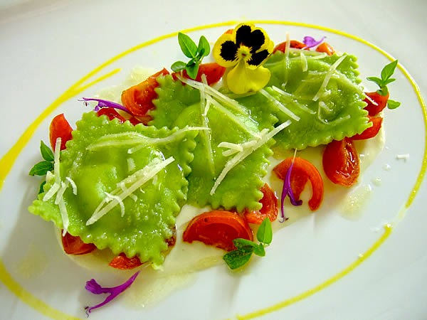

Plato de entrada
plato de ravioli verde con salsa al pesto, adornado con rodajas de tomate, hojas de hierbas y flores de pianta. Este tipo de ravioli, relleno de espinacas y acompañado de pesto, es una receta tradicional de cocina italiana que combina sabor y textura.